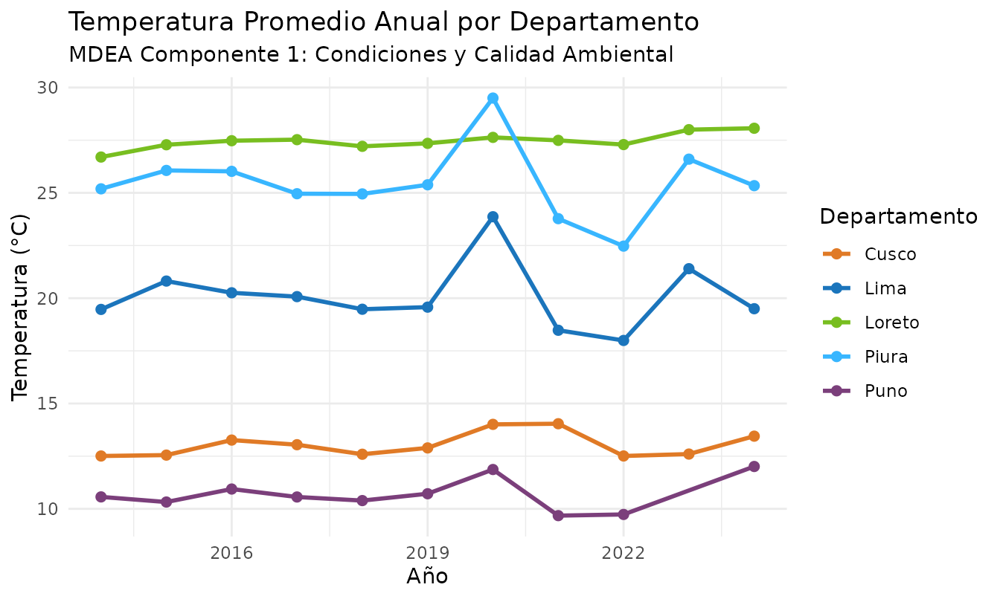

Explorando los Componentes del Marco MDEA
Source:vignettes/marcos-ordenadores-mdea.Rmd
marcos-ordenadores-mdea.RmdEl Marco para el Desarrollo de las Estadísticas Ambientales (MDEA)
El Marco para el Desarrollo de las Estadísticas Ambientales (MDEA / FDES) de las Naciones Unidas es la estructura metodológica internacional adoptada por el Ministerio del Ambiente (MINAM) y el SINIA para organizar las estadísticas ambientales del Perú.
El MDEA organiza toda la información ambiental en 6 componentes principales, cada uno enfocado en un aspecto del entorno natural y la interacción humana:
| N° | Componente MDEA | Color Oficial | Ámbito y Temáticas Principales |
|---|---|---|---|
| 1 | Condiciones y Calidad Ambiental | #38B6FF |
Atmósfera, clima, recursos hídricos, suelo, biodiversidad y calidad del aire/agua. |
| 2 | Recursos Ambientales y su Uso | #E07A26 |
Recursos forestales, minerales, energéticos, biológicos y uso de la tierra. |
| 3 | Residuos | #7B3F7B |
Generación y disposición de residuos sólidos municipales, no municipales y aguas servidas. |
| 4 | Eventos Naturales y Desastres | #2C3E50 |
Desastres naturales (heladas, friajes, sismos, inundaciones) y peligros climáticos. |
| 5 | Hábitat Humano y Salud Ambiental | #5E8D3B |
Asentamientos humanos, servicios básicos, salud ambiental y población expuesta. |
| 6 | Protección y Gestión Ambiental | #D4AC0D |
Gasto ambiental, regulación, fiscalización, educación ambiental y áreas protegidas. |
1. Búsqueda Directa por Palabras Clave
La forma más sencilla y amigable de encontrar estadísticas sin
necesidad de códigos complejos es mediante la función
sinia_buscar():
# Buscar estadísticas sobre bosques y deforestación
bosques <- sinia_buscar("bosque")
bosques |> select(id, numeral, nombre)
#> # A tibble: 6 × 3
#> id numeral nombre
#> <int> <chr> <chr>
#> 1 39 1.2.3.1 Superficie de bosque húmedo amazónico según departamento
#> 2 40 1.2.3.2 Porcentaje de la superficie departamental con bosque húmedo ama…
#> 3 57 2.2.1.2 Pérdida de bosque húmedo amazónico según departamento
#> 4 58 2.2.1.3 Variación anual de la tasa de pérdida de bosque húmedo amazónico
#> 5 60 2.2.1.5 Pérdida de bosque húmedo amazónico por categoría territorial
#> 6 61 2.2.1.6 Cambio de uso de la tierra en bosque húmedo amazónico
# Buscar estadísticas sobre calidad del aire
aire <- sinia_buscar("aire")
aire |> select(id, numeral, nombre)
#> # A tibble: 3 × 3
#> id numeral nombre
#> <int> <chr> <chr>
#> 1 1 1.1.1.1 Temperatura del aire promedio anual en estación de medición seg…
#> 2 41 1.3.1.1 Promedio anual de partículas inferiores a 2,5 micras (PM2,5) en…
#> 3 42 1.3.1.2 Promedio anual de partículas inferiores a 10 micras (PM10) en e…
# Buscar estadísticas sobre residuos sólidos
residuos <- sinia_buscar("residuos")
residuos |> select(id, numeral, nombre)
#> # A tibble: 18 × 3
#> id numeral nombre
#> <int> <chr> <chr>
#> 1 65 3.1.1.1 Generación per cápita de residuos sólidos domiciliarios urbano…
#> 2 66 3.1.1.2 Generación total anual de residuos sólidos domiciliarios urban…
#> 3 67 3.1.1.3 Generación anual de residuos sólidos no domiciliarios según de…
#> 4 68 3.1.1.4 Generación per cápita de residuos sólidos municipales
#> 5 69 3.1.1.5 Generación anual de residuos sólidos municipales según departa…
#> 6 70 3.1.1.6 Composición promedio de residuos sólidos domiciliarios según d…
#> 7 141 3.1.1.7 Generación per cápita de residuos sólidos no domiciliarios
#> 8 71 3.1.2.1 Residuos sólidos municipales dispuestos en una infraestructura…
#> 9 72 3.1.2.2 Porcentaje de residuos sólidos municipales generados que se di…
#> 10 140 3.1.2.3 Áreas degradadas por residuos sólidos municipales para reconve…
#> 11 167 3.1.2.4 Áreas degradadas por residuos sólidos municipales para recuper…
#> 12 169 3.1.2.5 Superficie degradada por residuos sólidos municipales
#> 13 73 3.2.1.1 Valorización de residuos sólidos municipales según departamento
#> 14 74 3.2.1.2 Porcentaje de residuos sólidos municipales valorizados con res…
#> 15 75 3.2.1.3 Número de municipalidades que implementan efectivamente la val…
#> 16 76 3.2.1.4 Número de municipalidades que implementan efectivamente la val…
#> 17 77 3.2.2.1 Número de productores de aparatos eléctricos y electrónicos (A…
#> 18 78 3.2.2.2 Cantidad anual de residuos de aparatos eléctricos y electrónic…2. Clasificación y Filtrado Amigable del Catálogo MDEA
Podemos enriquecer el catálogo completo del MDEA agregando una columna legible con el nombre de cada componente, facilitando su exploración:
# Descargar el índice completo del MDEA
indicadores <- sinia_indicadores(marco = "mdea", solo_estadisticas = TRUE)
# Nombres descriptivos para cada uno de los 6 componentes
nombres_componentes <- c(
"1" = "1. Condiciones y Calidad Ambiental",
"2" = "2. Recursos Ambientales y su Uso",
"3" = "3. Residuos",
"4" = "4. Eventos Naturales y Desastres",
"5" = "5. Hábitat Humano y Asuntos Socioambientales",
"6" = "6. Protección y Gestión Ambiental"
)
# Agregar el componente de forma clara y legible
catalogo_mdea <- indicadores |>
mutate(
codigo_componente = substr(numeral, 1, 1),
componente = nombres_componentes[codigo_componente]
)
# Conteo de indicadores disponibles por componente
catalogo_mdea |>
count(componente, name = "total_estadisticas")
#> # A tibble: 6 × 2
#> componente total_estadisticas
#> <chr> <int>
#> 1 1. Condiciones y Calidad Ambiental 60
#> 2 2. Recursos Ambientales y su Uso 23
#> 3 3. Residuos 18
#> 4 4. Eventos Naturales y Desastres 20
#> 5 5. Hábitat Humano y Asuntos Socioambientales 17
#> 6 6. Protección y Gestión Ambiental 443. Explorando los 6 Componentes con Ejemplos Prácticos
Componente 1: Condiciones y Calidad Ambiental
Comprende variables meteorológicas y calidad del aire. Por ejemplo, la temperatura promedio anual (ID = 1):
# Filtrar indicadores del Componente 1
c1_indicadores <- catalogo_mdea |>
filter(codigo_componente == "1")
head(c1_indicadores |> select(id, numeral, nombre), 5)
#> # A tibble: 5 × 3
#> id numeral nombre
#> <int> <chr> <chr>
#> 1 1 1.1.1.1 Temperatura del aire promedio anual en estación de medición seg…
#> 2 2 1.1.1.2 Temperatura máxima promedio anual en estación de medición según…
#> 3 3 1.1.1.3 Temperatura mínima promedio anual en estación de medición según…
#> 4 4 1.1.1.4 Precipitación total anual en estación de medición según departa…
#> 5 5 1.1.1.5 Humedad relativa promedio anual en estación de medición según d…
# Descargar datos de Temperatura del Aire (ID = 1) en formato largo
temp_peru <- sinia_datos(id = 1, pivot = "long")
head(temp_peru)
#> # A tibble: 6 × 3
#> departamento anio valor
#> <chr> <int> <dbl>
#> 1 Amazonas 2014 14.9
#> 2 Áncash 2014 12.5
#> 3 Apurímac 2014 14.2
#> 4 Arequipa 2014 16.1
#> 5 Ayacucho 2014 18.4
#> 6 Cajamarca 2014 15.0Componente 2: Recursos Ambientales y su Uso
Incluye recursos biológicos, forestales y energéticos:
# Filtrar indicadores del Componente 2
c2_indicadores <- catalogo_mdea |>
filter(codigo_componente == "2")
head(c2_indicadores |> select(id, numeral, nombre), 5)
#> # A tibble: 5 × 3
#> id numeral nombre
#> <int> <chr> <chr>
#> 1 48 2.1.1.1 Número de negocios sostenibles identificados en el catálogo de …
#> 2 49 2.1.1.2 Número de negocios sostenibles identificados en el Catálogo de …
#> 3 50 2.1.1.3 Ahorro anual en los consumos de agua, energía y papel reportado…
#> 4 51 2.1.1.4 Ahorro anual en el consumo de agua reportado por las entidades …
#> 5 52 2.1.1.5 Ahorro anual en el consumo de energía reportado por las entidad…Componente 3: Residuos
Monitorea la generación, reciclaje y disposición final de residuos:
# Filtrar indicadores del Componente 3
c3_indicadores <- catalogo_mdea |>
filter(codigo_componente == "3")
head(c3_indicadores |> select(id, numeral, nombre), 5)
#> # A tibble: 5 × 3
#> id numeral nombre
#> <int> <chr> <chr>
#> 1 65 3.1.1.1 Generación per cápita de residuos sólidos domiciliarios urbanos…
#> 2 66 3.1.1.2 Generación total anual de residuos sólidos domiciliarios urbano…
#> 3 67 3.1.1.3 Generación anual de residuos sólidos no domiciliarios según dep…
#> 4 68 3.1.1.4 Generación per cápita de residuos sólidos municipales
#> 5 69 3.1.1.5 Generación anual de residuos sólidos municipales según departam…Componente 4: Eventos Naturales y Desastres
Registra ocurrencias de fenómenos naturales, heladas, friajes e impactos:
# Filtrar indicadores del Componente 4
c4_indicadores <- catalogo_mdea |>
filter(codigo_componente == "4")
head(c4_indicadores |> select(id, numeral, nombre), 5)
#> # A tibble: 5 × 3
#> id numeral nombre
#> <int> <chr> <chr>
#> 1 79 4.1.1.1 Número de sismos ocurridos según departamento
#> 2 80 4.1.1.2 Rango de magnitudes de los sismos
#> 3 81 4.1.1.3 Número de alertas de peligros volcánicos por volcán
#> 4 82 4.1.1.4 Número de boletines vulcanológicos emitidos por volcán
#> 5 83 4.1.1.5 Número de monitoreo en las estaciones en las quebradas Huaycolo…Componente 5: Hábitat Humano y Asuntos Socioambientales
Enfocado en las condiciones de vida, acceso a servicios y salud ambiental:
# Filtrar indicadores del Componente 5
c5_indicadores <- catalogo_mdea |>
filter(codigo_componente == "5")
head(c5_indicadores |> select(id, numeral, nombre), 5)
#> # A tibble: 5 × 3
#> id numeral nombre
#> <int> <chr> <chr>
#> 1 91 5.1.1.1 Número de comunidades amazónicas en el ámbito de intervención d…
#> 2 92 5.1.1.2 Mujeres que participaron en el programa de voluntariado ambient…
#> 3 93 5.1.2.1 Superficie de área verde por habitante según departamento
#> 4 94 5.1.2.2 Superficie de área verde por habitante en Lima Metropolitana se…
#> 5 95 5.1.2.3 Superficie de área verde por habitante en la Provincia Constitu…Componente 6: Protección, Gestión y Participación Ambiental
Abarca gobernanza ambiental, áreas naturales protegidas e instrumentos de gestión:
# Filtrar indicadores del Componente 6
c6_indicadores <- catalogo_mdea |>
filter(codigo_componente == "6")
head(c6_indicadores |> select(id, numeral, nombre), 5)
#> # A tibble: 5 × 3
#> id numeral nombre
#> <int> <chr> <chr>
#> 1 100 6.1.1.1 "Número de inversiones con presupuesto e inversiones ejecutadas…
#> 2 101 6.1.1.2 "Inversiones del Sector Ambiente según presupuesto y nivel de e…
#> 3 102 6.1.1.3 "Proyectos de inversión pública en el ámbito de intervención de…
#> 4 103 6.1.1.4 "Número de proyectos aprobados por el Senace por instrumentos d…
#> 5 104 6.1.1.5 "Número de proyectos aprobados por el Senace por sectores según…4. Visualización de Datos de un Componente MDEA
A continuación, visualizamos la evolución temporal de la temperatura del aire en distintos departamentos (Componente 1):
departamentos_muestra <- c("Lima", "Loreto", "Cusco", "Piura", "Puno")
temp_filtrada <- temp_peru |>
filter(departamento %in% departamentos_muestra, !is.na(valor))
ggplot(temp_filtrada, aes(x = anio, y = valor, color = departamento)) +
geom_line(linewidth = 1) +
geom_point(size = 2) +
scale_color_manual(values = c(
"Lima" = "#1B75BC",
"Loreto" = "#78BE20",
"Cusco" = "#E07A26",
"Piura" = "#38B6FF",
"Puno" = "#7B3F7B"
)) +
labs(
title = "Temperatura Promedio Anual por Departamento",
subtitle = "MDEA Componente 1: Condiciones y Calidad Ambiental",
x = "Año",
y = "Temperatura (°C)",
color = "Departamento"
) +
theme_minimal()
5. Marco Temático Sectorial del SINIA
Adicionalmente al marco MDEA, el SINIA permite consultar la
organización sectorial propia del Ministerio del Ambiente mediante el
argumento marco = "sinia":
# Catálogo sectorial propio del SINIA
sinia_tematico <- sinia_indicadores(marco = "sinia", solo_estadisticas = TRUE)
head(sinia_tematico |> select(id, numeral, nombre), 6)
#> # A tibble: 6 × 3
#> id numeral nombre
#> <int> <chr> <chr>
#> 1 10 1.1.1 Superficie de lagunas de origen glaciar por cordillera
#> 2 11 1.1.2 Número de lagunas de origen glaciar por cordillera
#> 3 12 1.1.3 Número de lagunas de origen glaciar según departamento
#> 4 13 1.1.4 Superficie glaciar por cordillera
#> 5 14 1.1.5 Número de glaciares por cordillera
#> 6 15 1.1.6 Fluctuación del frente glaciar Huillca